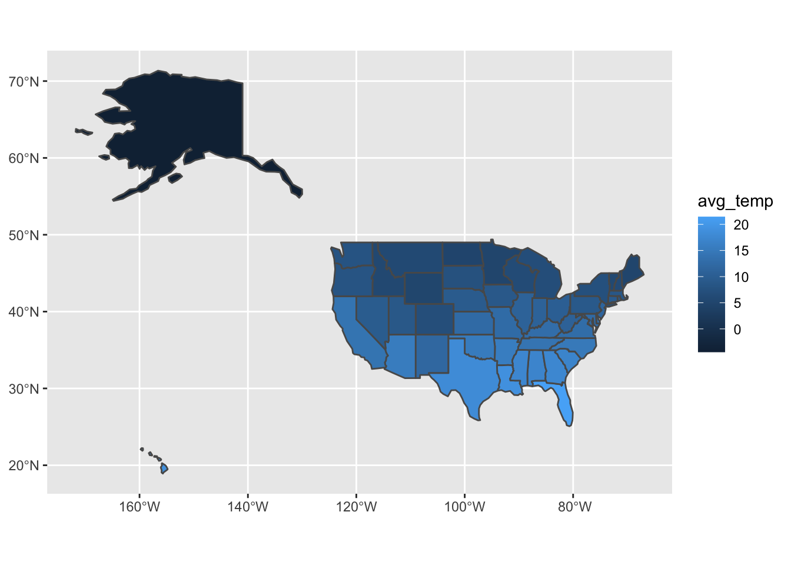
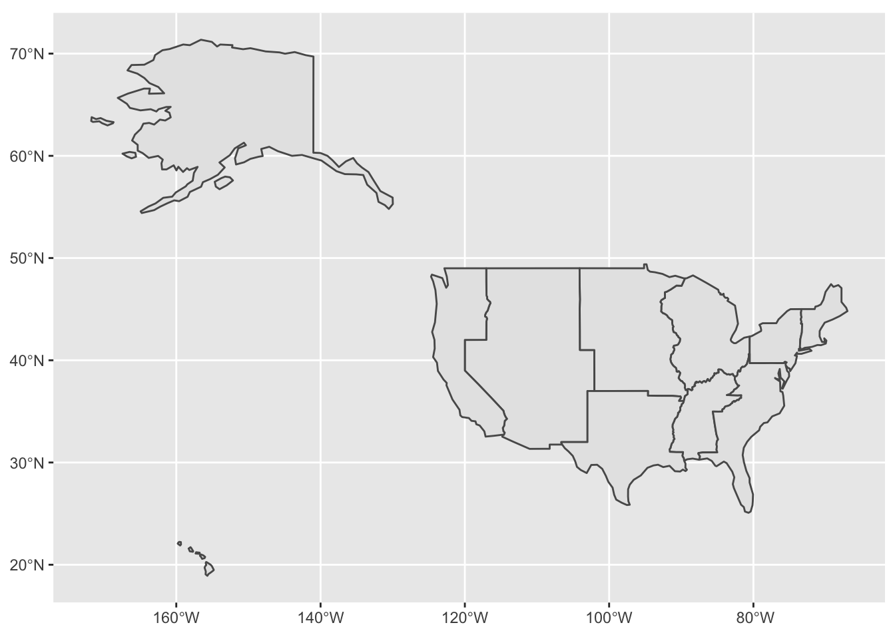
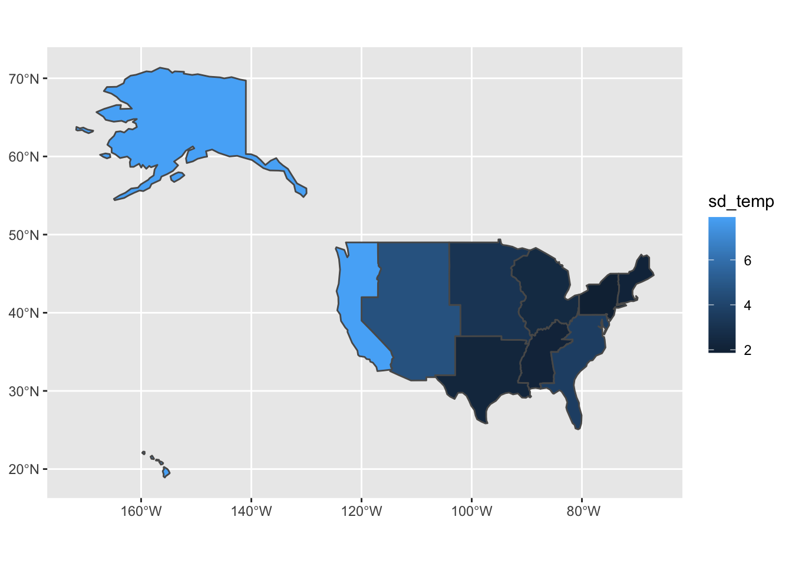

library(raster)
library(sf)Operations with vector and raster data
Learning Objectives
Extract raster data based on vector data
Operations with vector data: intersection, dissolve/union, clip and buffer
Functions taught in this tutorial:
extract(),sapply(),group_by(),mutate(),summarize()Packages used in this tutorial:
raster,sf,ggplot2,dplyr
Now that we have learned how to do some basic manipulations with vector and raster data types in R, in this and the next tutorial, we will explore how to manipulate and combine these two data types to extract data in specific ways to answer our questions.
1. Extracting raster data based on a shapefile
In the previous tutorial, we saw how to extract data from raster files, and went over one approach to extract specific data for a specific region, i.e., climatic conditions for NY state. There, we chose to 1) subset our states object to obtain a shapefile that has one feature only corresponding to NY state (use the filter() function from the tidyverse package); 2) reduce our raster to the region of the NY state using the mask() function; and then 3) extract data from that reduced raster using the rasterToPoints() function. Here, we will bypass the filter() and mask() function and directly extract data from our raster based on several polygons, using a different function from the raster package.
First, let’s load the needed packages:
Now, let’s create our objects again, in case we don’t have them in our environment (if you do, no need to run this):
# We read the states shapefile using read_sf()
states <- read_sf('data/shapefiles/us_state_boundaries/ne_110m_admin_1_states_provinces.shp')
# We read the temperature raster using raster()
annual_temp <- raster('data/raster_files/wc2.1_5m_bio_1.tif')Let’s say that, for our analyses (to be done in the next tutorials), we want to understand how temperature, precipitation and elevation are correlated across the states of the US. In the previous tutorial, we did some data extraction, manipulation and visualization to start answering that question. We used rasterToPoints() to transform all values in a raster into a dataframe. Here, we will use the function extract(), which allows us to provide a shapefile to guide the extraction of values.
temp_per_state <- raster::extract(annual_temp,states)The function extract() returns a list where each element corresponds to one of the features in the original shapefile (in our case, each feature is a state). To know which element corresponds to which state, we should name those elements. Because they follow the order of the features in the shapefile, we can just do:
names(temp_per_state) <- states$nameWith the data organized in this list, now we can extract some summary statics for each state. For instance, we can use the function mean() to calculate the average temperature for each element (i.e, each state). A neat way to apply the same function to all elements in a list is to use the functions from apply family. This family is present in basic R (meaning you don’t need to install any packages), and is populated with functions to perform repetitive actions across matrices, dataframes and lists.
Here, we will use the function sapply(), which applies a specified function to all elements within a list, and returns vector from it. We provide to it: 1) the list we want to use; 2) the function we want to apply to the list; 3) any additional argument to the function. here, we specify na.rm = TRUE, in order to remove NA values that might have shown up from our raster extraction.
avg_temp_per_state <- sapply(temp_per_state, mean, na.rm = TRUE)
NAvalues may show up when you perform a raster extraction based on a shapefile, because the raster cells and the polygon shapes don’t always align perfectly. This is specially true when working near the coastline: a polygon line may accurately reflect the coastline whereas a raster file will have square-shaped cells with sizes depending on the resolution and that may not perfectly cover all the area within the polygon. Therefore, sometimes the function will attempt to extract an area within the polygon that is not covered by a cell.
Now we have a named vector with the average temperature per state. Since the order of states in this vector is the same as order of states in states shapefile, we can directly add that column to the shapefile using the function mutate() from the tidyverse package. This function basically creates a new column in your dataframe with the values you provide, so you just need to name your new column and say it’s equal to the vector we just created.
Note that we can only use
mutate()because the order of the states is the same in both the shapefile and the vector we created. If that was not the case, we would need R to actively look into the shapefile and the vector and match the values of average temperature to the correct state based on a third column that would have the names of the states. We did something similar to add the GDP values in our Intro to Vector Data tutorial.
library(tidyverse)states <- states %>% mutate(avg_temp = avg_temp_per_state)Now, we can use ggplot to make a map:
library(ggplot2)
ggplot(data = states, aes(fill = avg_temp)) + geom_sf()
Exercise
How would you proceed to making a map of the standard deviation of temperature in each state?
Hint: you can calculate the standard deviation of a collection of values using the
sd()function.
2. Modifying our shapefile to guide extraction
Now that we know how to do extract data from a raster file based on features in our shapefile, we can modify the underlying shapefile to get data and statistics for different spatial patterns. For instance, maybe we have a shapefile of counties and a raster of US population density, and we want to calculate or plot population density per county but also per state. Or maybe per sub-regions in each state. As long as we have the necessary information in our shapefile (or we are able to add it to our shapefile like we did in the intro to vector tutorial), we should be able to modify the features to what we want.
To show an example, let’s say we would like to get the standard deviation (a metric of the variation in our data) for the temperature in the US, but per region (like New England, Midwest), instead of per state. We do have a column in our states shapefile named region_sub that seems to have those regions (we have another one named region, but it’s just four categories: midwest, west, south and northeast).
In order to have our data extracted by these sub regions, we need to merge all states that belong to one subregion into a single feature. That “merging of one or more features into one” is a common operation with vector data called union. Notice that union can involve merging features into one, but keeping their boundaries visible, or simply dissolving the boundary lines to make a new entire polygon. The latter is usually referred to as a dissolve operation. Both names can be used interchangeable or not, depending on the GIS tool you are using.
In the sf package, we can use the function st_union() from the sf package to merge our polygon geometries by a specific grouping. The code below uses group_by() to tell R that we want our rows to be sorted into different groups based on column region_sub. The function group_by() doesn’t really modify our data: is just assigned a group index to each row. With that grouping set up, then we can use additional functions to modify the data based on that grouping. In here, we follow group_by() with the function summarize, which basically creates a new dataframe with new columns that we provide in this function. We name the column geometry (so ggplot knows how to use that to plot the map) and the value of the column is based on the results of the st_union function performed on the original geometry column of the states shapefile.
states_un <- states %>% group_by(region_sub) %>%
summarize(geometry = st_union(geometry))We can see the results by plotting it:
ggplot(data = states_un) + geom_sf()
Note that we used the st_union() function on the geometry column because that is the column that contian the information about the shape of those polygons. Many functions in the sf package can be used to perform such spatial operations in vector files. These functions can be applied directly to the object that you want (without having to specify a column). Here, we specify a column because we are using it with the function summarize() which requires you to create new columns and specify the value of these new columns as functions of an existing column.
Notice also that the summarize() function maintains only the columns you provide to it. Our new shapefile states_un contains only two columns: the column that was used for the grouping (region_sub) and the new column created by summarize (a geometry called that is the union of the features in the previous geometry column, but merged by the grouping we created). If we wanted to keep the other information present in the original states shapefile, we would have to provide that info to the summarize() function. We would also need to provide how the summarize() function should create the new data based on grouping. For instance, if you want to keep the name column, how would you merge the information of this column for all the rows that belong to the same group? Would you create a list of all these names? Would you keep just one of the names? What if it was the avg_temp column that we just created? Maybe you would want to average those values to get an average of the whole subregion. You can make those choices by providing additional information to the summarize() function:
states_un <- states %>% group_by(region_sub) %>%
summarize(name = paste(name, collapse = ', '),
# Using paste() to combine names and separate them by comma
avg_temp = mean(avg_temp),
# Using mean() to calculate the average of state averages
geometry = st_union(geometry))
# Using st_union to dissolve the geometry of the states into one for the subregionIf you look again at the states_un object (you can use the View() function), you will see we have more columns now.
Finally, we can now extract values from the raster based on these new features, calculate the standard deviation and add it to our new shapefile, all following the codes we’ve seen above.
values_region <- raster::extract(annual_temp,states_un)
sd_temp_per_region <- sapply(values_region, sd, na.rm = TRUE)
states_un <- states_un %>% mutate(sd_temp = sd_temp_per_region)
ggplot(data = states_un, aes(fill = sd_temp)) + geom_sf()
From this map, we can see that the west coast region has an interestingly high variation in the mean temperature.